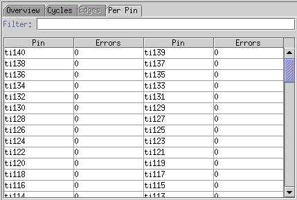

Per Pin tab
The Per Pin tab (see the figure below) shows you either all pins of the currently selected port or the pins of a user defined format if the format mode is active. If the Error Count submenu is activated, the total number of errors per pin in the last executed functional test will be displayed.
The Per Pin tab can be modified via the View menu. This Menu contains a Pins Per Row submenu and the Error Count.
Use the Field Filter to view dedicated pins.

Functional changes
- Introduced before SmarTest 6.3.2